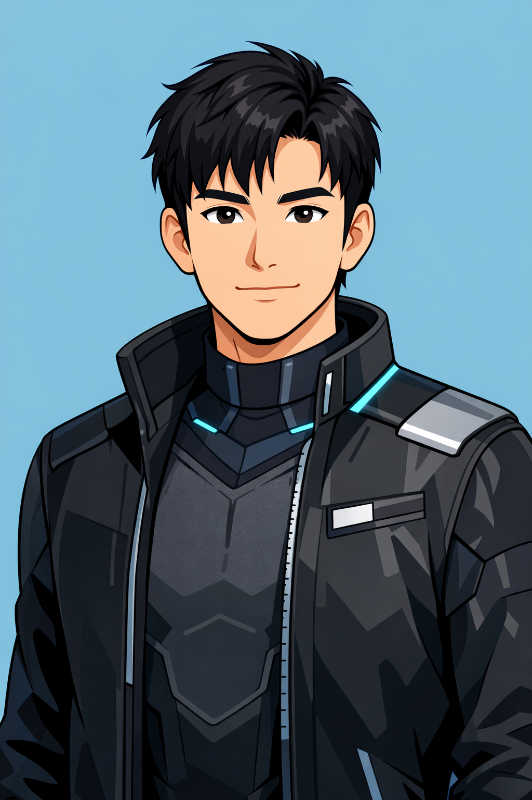

科技產品 × 系統開發 × AI 整合
我叫陳小奇，出生於 2000 年，是一位專注於科技產品與系統開發的創業者。 我的學術背景來自 CwC 碩士體系，這段學習歷程讓我在技術架構、 產品思維與數位系統整合上建立了扎實的基礎。
畢業後，我投入系統開發工程師的工作， 長期專注於網頁設計與系統開發領域， 累積了從前端介面設計到系統邏輯建構的完整實務經驗， 並持續探索如何透過技術提升產品的使用價值與商業效率。
我相信科技不只是工具， 而是一種能重新定義工作方式與創造價值的力量。 因此我特別關注 AI 技術與數位系統整合， 希望透過更智慧的工具提升企業與創作者的效率。